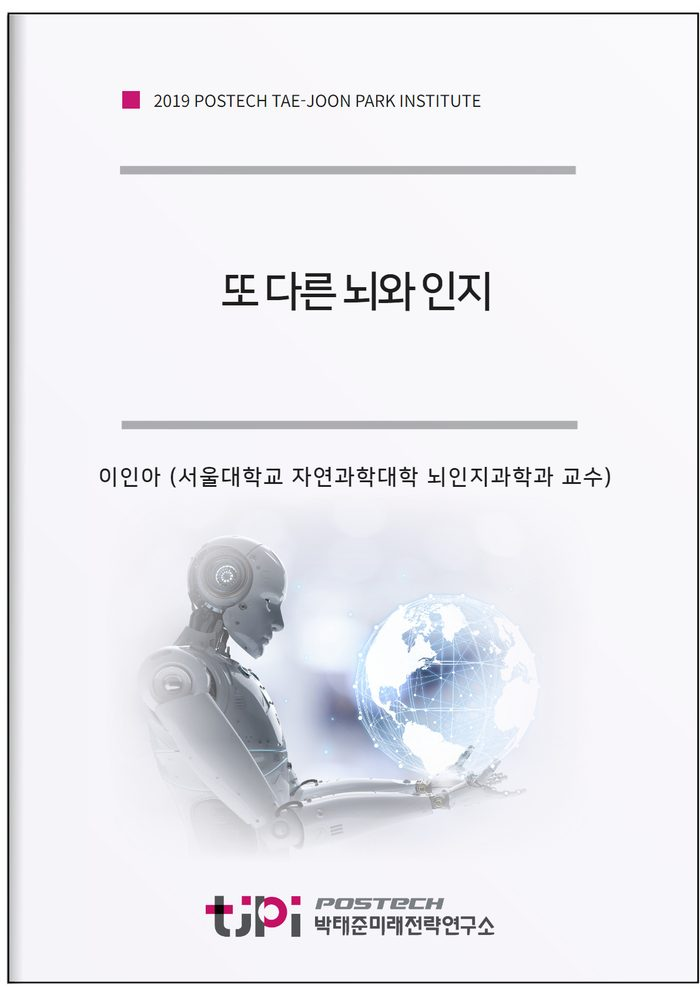

저자 이인아 (서울대학교 자연과학대학 뇌인지과학과 교수)보도일 2019-11-30

요 약
인공지능이 인간의 삶에 깊숙이 들어오게 될 가까운 미래에는 인공지능이 인간 뇌가 수행해 오던 기능의 상당 부분을 더욱 정확하고 빠르게 수행하게 되면서 인간의 뇌인지가 인공지능이 대체할 수 없는 분야로 더욱 편향되어 쓰일 것으로 예상된다
본 연구는 이러한
AI
와 더불어 사는 시대에 달라질 뇌와 인지의 기능적 변화 가능성을 짚어 보고 특히 한국의 특수한 상황에서 일어날 수 있는 뇌인지적 변화 및 대비책을 모색해 보고자 한다.
인공지능이 대체할 가능성이 높은 인간 뇌인지의 영역과 인간 고유의 영역으로 한동안 남아있을 뇌인지 영역을 예상하고
도래할 인공지능 시대를 대비하고 행복하게 살아가기 위한 뇌인지과학적 대비책을 제시하고자 한다.
------ 요약 ------
우리나라 사람들은 이세돌이 알파고에게 바둑 게임에서 내리 지는 모습을 텔레비전으로 생생하게 지켜보면서 충격과 놀라움을 동시에 느꼈을 것이다. 또, 이로 인해 인공지능에 더욱 관심을 가지게 되었을 것이다. 대다수의 일반인들, 심지어 과학자들의 대다수도 이세돌이 완승할 것이라고 예측했던 통계 자료를 볼 때, 사람들이 현재 인공지능 기술의 발전 속도가 얼마나 빠른지에 대해 전혀 감이 없었다는 것을 알 수 있다. 마찬가지로 앞으로 50년 이내에 더욱더 발달한 인공지능은 우리의 삶에 어느새 소리없이 들어와 있을 것이며, 우리는 싫든 좋든 인공지능이 지탱해 주는 서비스와 기술을 매우 많이 이용하며 살게 될 것이다.
이 연구를 통해 우리 삶의 한 부분으로 자리매김할 인공지능과 더불어 살아가는 인간이 행복한 삶을 영위하기 위해 한 번쯤 짚고 넘어가야 할 것들을 뇌인지과학적 관점에서 챙겨본다. 인공지능에 대한 두려움은 인간이 가지고 있는 근원적 콤플렉스와 불안에서 기인하는 동시에, 뇌인지에 대해 아직 아는 지식이 많지 않아 그 신비로움을 그대로 간직하고 싶은 희망에서 기인하는 것이라고 진단한다. 이 상태로 인공지능 시대를 맞이하는 것은 현명하지 못하며 행복의 길로 가기도 어려워 보인다. 인간의 뇌와 인지에 대한 과학적 이해를 바탕으로 인공지능과 인간 뇌인지와의 차이를 정확히 이해하고 이를 바탕으로 보다 더 인간다운 삶을 살 수 있는, 역사적이라 부를 만한 이 절호의 기회를 잡아야 한다고 주장하고 싶다. 우리가 대처하지 못할 경우, 우리는 인공지능의 기계학습이 우리에게 던져주는 삶을 무의식적으로 살게 될 것이며, 이는 길게 볼 때 인간을 불행하게 만들 것이다
목 차
1. 대단한 인공지능?
2. AI 시대에 우리는 행복한가?
- 패턴 매칭 라이프
- 감정 매칭 라이프
- 기억 매칭 라이프
3. 뇌에서 배우는 또 다른 지능
- 목표를 향한 집념 - 작업기억
- 세상에 대한 나만의 해석 - 감각과 지각
- 권선징악, 강화와 약화 - 학습
- 생활 속 경험의 기록, ‘내’가 되다 - 사건기억
4. 뇌인지도 변한다
5. 또 다른 지능 시대의 뇌인지와 행복
6. ‘또 다른 뇌와 인지’를 쓰고 나서
내 용
[2019 연구논문] 또 다른 뇌와 인지 ─AI 시대를 살아가는 인간 뇌인지의 변화
이인아 (서울대학교 자연과학대학 뇌인지과학과 교수)
- 원문은 미래전략연구총서12 [또 다른 지능, 다음 50년의 행복]로 발간되었습니다.